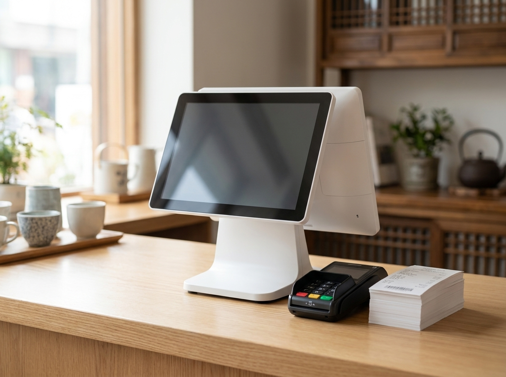
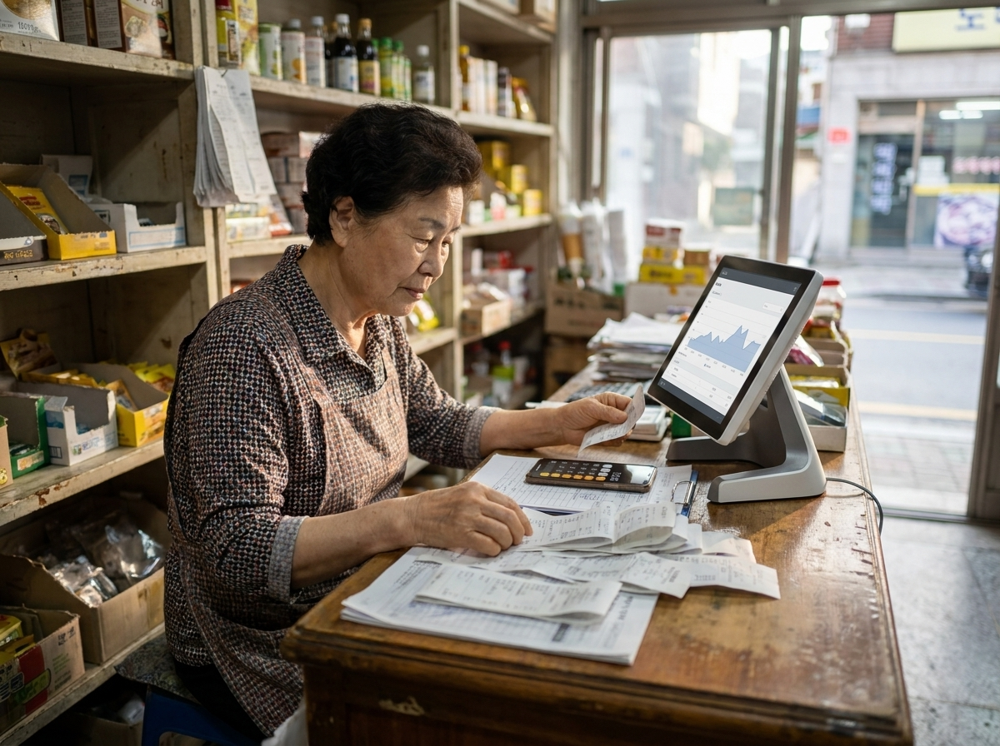

개인 일반과세자라면 2026년 7월 1일부터 부가가치세 1기 확정신고·납부 기간이 시작됩니다. 법정 마감일은 원칙적으로 7월 25일이지만, 올해는 25일이 토요일이라 다음 영업일인 7월 27일(월)까지 연장됩니다. 올해 1월부터 6월까지의 매출과 매입을 정리해 신고하고 세액을 납부해야 하는 시기이니, 아직 준비 전이라면 지금 바로 자료부터 챙겨야 합니다. 아래에서 신고 대상 구분, 준비할 자료, 자주 하는 실수, 그리고 매출 자료를 매장에서 미리 정리해두는 방법까지 짚어보겠습니다. 단, 본인의 과세유형과 구체적인 세액 계산은 반드시 국세청 홈택스(hometax) 또는 세무사를 통해 확인하시기 바랍니다.
부가가치세 신고는 단순한 서류 제출이 아니라 매장 현금흐름과 직결되는 일입니다. 마감일(올해는 7월 27일 월요일)을 넘기면 신고불성실·납부지연 등에 따른 가산세 부담이 생길 수 있고, 이는 고스란히 사장님의 순이익을 갉아먹습니다. 또한 6개월치 세액을 한 번에 납부해야 하므로, 미리 대략적인 납부 규모를 파악해두지 않으면 갑작스러운 목돈 지출로 자금 계획이 흔들릴 수 있습니다.
반대로 준비만 잘 해두면 공제받을 수 있는 매입세액을 빠짐없이 챙길 수 있습니다. 결국 부가세 신고의 핵심은 "매출과 매입 자료를 정확히, 빠짐없이 갖추는 것"입니다. 자료가 정리돼 있으면 신고도 빠르고, 세무사에게 맡기더라도 소통이 훨씬 매끄러워집니다.
먼저 본인의 과세유형을 정확히 아는 것이 출발점입니다. 유형에 따라 신고 시기와 방식이 다르기 때문입니다.
과세유형은 매출 규모나 업종에 따라 바뀔 수 있고, 중간에 전환되는 경우도 있습니다. 내가 일반과세자인지 간이과세자인지, 예정부과 대상인지 애매하다면 홈택스에서 본인 사업자 정보를 조회하거나 세무사에게 문의하는 것이 가장 확실합니다.

신고의 8할은 자료 준비입니다. 크게 매출 자료와 매입 자료로 나눠 챙기면 빠짐없이 정리할 수 있습니다.
| 구분 | 챙겨야 할 자료 | 확인 포인트 |
|---|---|---|
| 매출 | 신용·체크카드 매출 내역 | 카드사·포스 집계와 실제 매출 일치 여부 |
| 매출 | 현금영수증 발행 내역 | 현금 매출 누락분 없는지 확인 |
| 매출 | 세금계산서(발행분) | 거래처 발행 건 전부 포함 |
| 매입 | 매입 세금계산서 | 물품·재료 구입 시 받은 계산서 |
| 매입 | 사업용 신용카드 사용 내역 | 사업 관련 지출만 구분 |
| 공통 | 사업 관련 지출 증빙 | 공제 가능 여부는 홈택스·세무사 확인 |
표의 자료를 모두 갖췄더라도, 어떤 항목이 공제 대상인지·구체적인 세액이 얼마인지는 국세청 홈택스 또는 세무사 확인을 원칙으로 하세요.

자주 하는 실수의 상당수는 "매출 집계가 흩어져 있어서" 생깁니다. 누리포스를 쓰면 카드 결제·현금영수증·매출 내역이 자동으로 한곳에 집계되어, 상반기 매출 자료를 정리하는 부담이 크게 줄어듭니다. 일자별·기간별 매출을 바로 조회할 수 있으니, 신고 시즌에 자료를 뒤질 일이 줄어듭니다.
물론 세금 계산과 신고 자체는 홈택스나 세무사의 영역입니다. 누리포스가 도와드리는 부분은 그 앞단, 즉 매출 증빙 자료를 깔끔하게 준비하는 일입니다. 정품 신제품을 서울 본사에서 수도권(서울·인천·경기) 지역까지 자사 엔지니어가 직접 설치·관리하기 때문에, 도입 후 사용법이나 매출 조회가 막힐 일도 적습니다.
간이과세자는 부가세 신고가 원칙적으로 연 1회(다음 해 1월)이지만, 상반기에 세금계산서를 발급했다면 7월에 확정신고 대상이 될 수 있고, 그 외에는 7월에 예정부과 고지서를 받는 경우가 있습니다. 본인 상황과 고지 여부는 홈택스에서 확인하세요.
매출이 적거나 없어도 일반과세자라면 확정신고 대상이 됩니다(무실적 신고). 본인 케이스는 홈택스나 세무사에게 확인하시기 바랍니다.
매출·매입 자료가 정리돼 있으면 대략적인 규모를 가늠할 수 있지만, 정확한 계산은 공제 항목·업종 등에 따라 달라집니다. 구체적인 세액은 홈택스 또는 세무사를 통해 확인하는 것이 정확합니다.
아니요. 누리포스는 매출·결제 자료를 자동으로 집계해 신고 자료 준비를 돕는 도구입니다. 실제 세금 계산과 신고는 홈택스나 세무사를 통해 진행하셔야 합니다.
정품 신제품을 거품 뺀 직접 공급가로, 서울 본사에서 수도권까지 자사 엔지니어가 직접 설치해 드립니다.